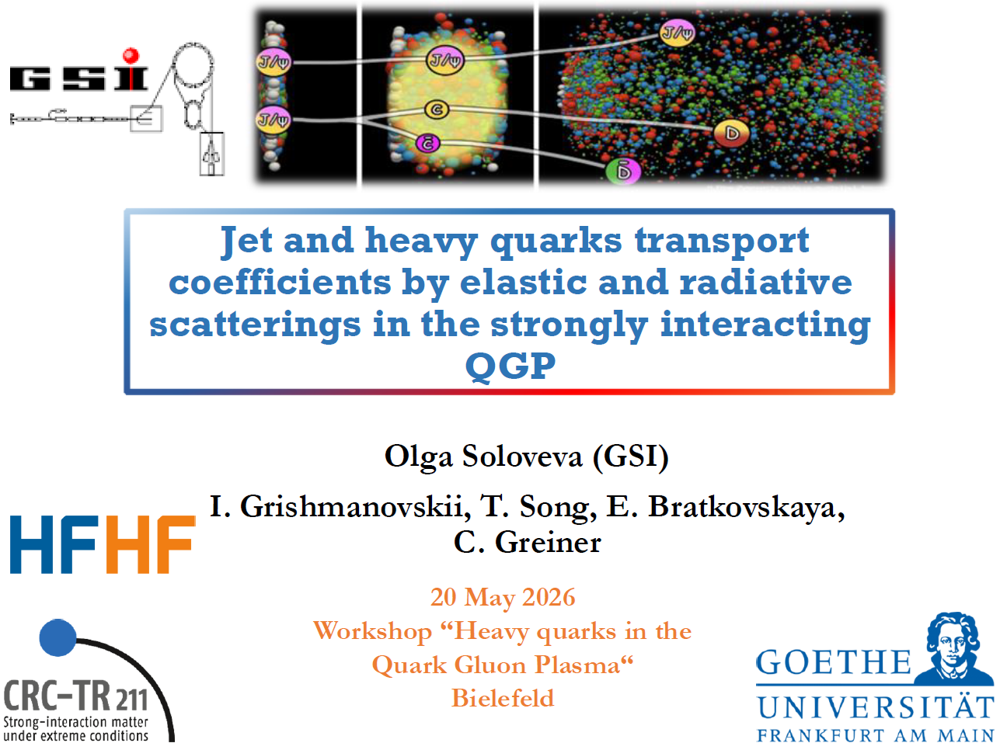
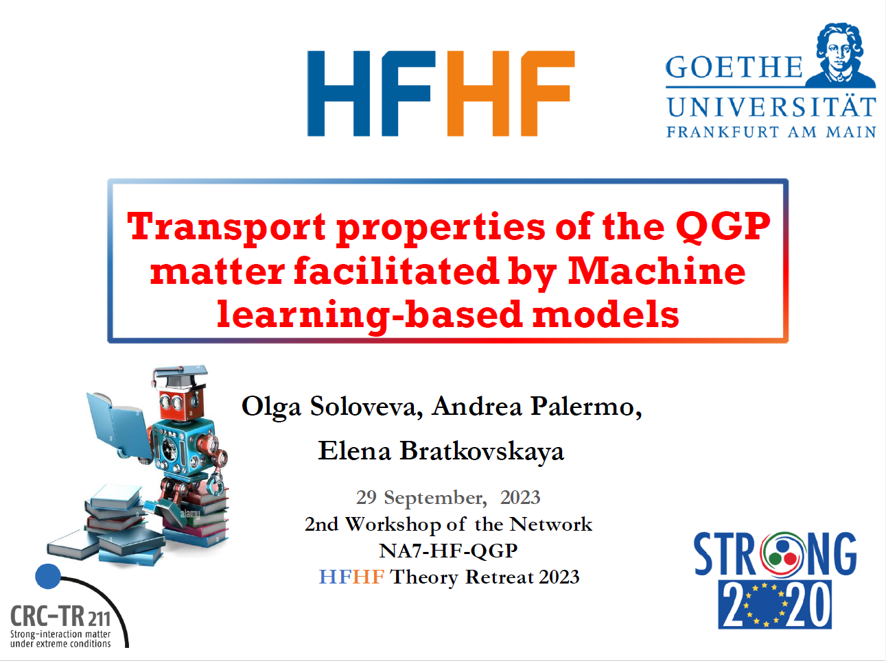
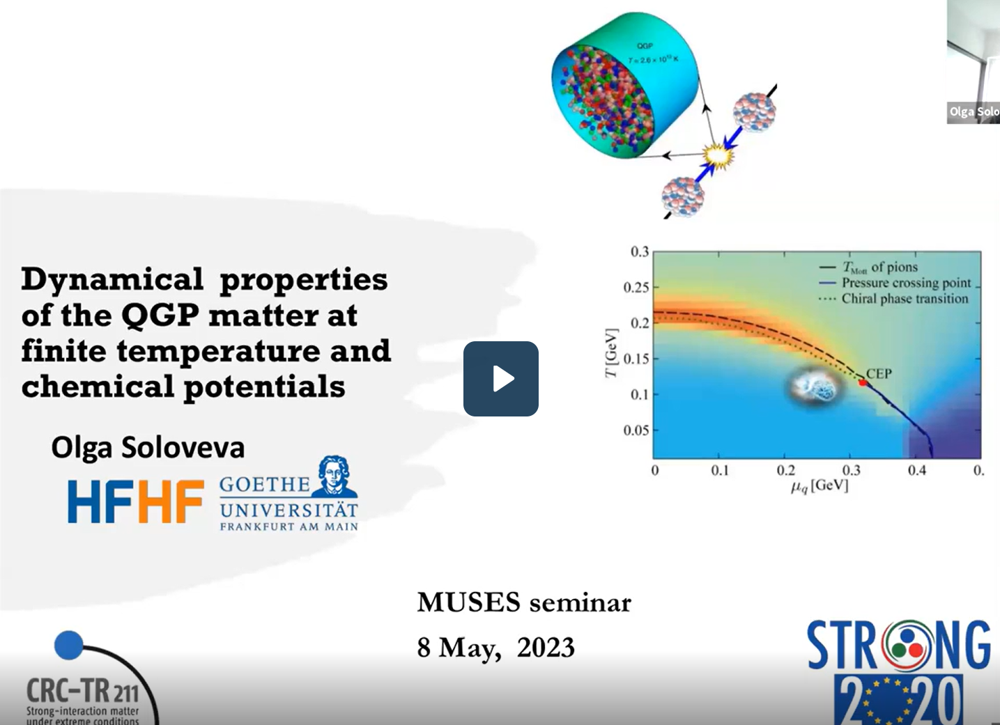
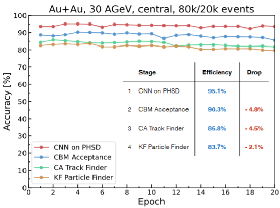
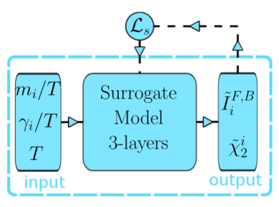
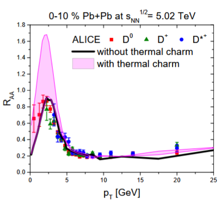
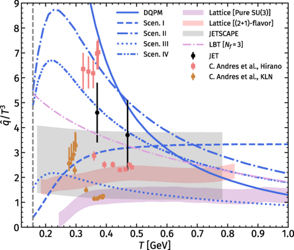
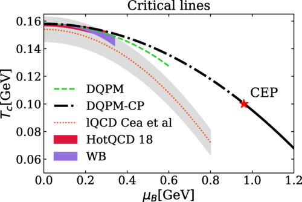
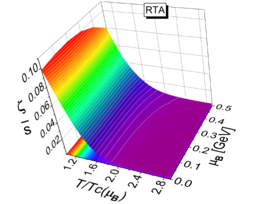

Microscopic transport of QCD matter
Development and application of PHSD and DQPM to study the non-equilibrium dynamics, transport coefficients, and quasiparticle properties of strongly interacting matter.
Theoretical nuclear physicist working on strongly interacting QCD matter, microscopic transport theory, heavy-ion phenomenology, hard probes, and machine-learning methods for high-rate experiments.
I develop and apply the Parton–Hadron–String Dynamics transport approach and the Dynamical QuasiParticle Model to study the quark–gluon plasma and related phases of strongly interacting matter. My current work combines microscopic off-shell transport with machine learning for QGP event selection, hard-probe tomography, and inverse problems in relativistic heavy-ion collisions.
Development and application of PHSD and DQPM to study the non-equilibrium dynamics, transport coefficients, and quasiparticle properties of strongly interacting matter.
Jet and heavy-quark transport in a strongly interacting medium, including elastic and radiative energy loss, diffusion, and sensitivity to non-perturbative quasiparticle degrees of freedom.
CNN-, GNN-, and transformer-based methods for event classification, QGP-trigger development, surrogate modeling, and inverse extraction of medium properties.
Developing a multi-model, ML-supported framework for jets and heavy flavor in microscopic transport theory.
Work on machine-learning event selection using PHSD, UrQMD cross-model tests, CBM acceptance, and detector-reconstruction effects.
Contributor to discussions on nuclear-physics tools, machine learning, artificial intelligence, and quantum computing.
Selected seminar and conference presentations. Each card includes a compact visual preview and a direct link to slides or external material.

Workshop “Heavy Quarks in the Quark-Gluon Plasma”, Bielefeld.

STRONG-2020 NA7 Workshop and HFHF Theory Retreat.

Online seminar on quasiparticle dynamics, transport coefficients, and finite-density QCD matter.
Selected works on machine-learning applications in heavy-ion physics, DQPM quasiparticle properties, jet transport coefficients, heavy flavor, and QGP transport. For the complete and automatically updated list, see my InspireHEP author profile or the InspireHEP literature list with citation summary.
Citation counts and h-index are linked dynamically because they change over time; the InspireHEP links above are configured with citation summary enabled and self-citations excluded.

O. Soloveva, A. Belousov, I. Kisel and E. L. Bratkovskaya.

O. Soloveva, A. Palermo and E. Bratkovskaya.

T. Song, I. Grishmanovskii, O. Soloveva and E. Bratkovskaya.

I. Grishmanovskii, O. Soloveva, T. Song, C. Greiner and E. Bratkovskaya.

O. Soloveva, J. Aichelin and E. Bratkovskaya.

O. Soloveva, P. Moreau and E. Bratkovskaya.
Thesis on transport properties of the strongly interacting quark–gluon plasma; magna cum laude.
Development and application of the Parton–Hadron–String Dynamics transport approach.
Compact CNN-based event classification for high-rate heavy-ion experiments and CBM-oriented online event selection.
Tools and workflows for microscopic transport simulations, event-level observables, transport coefficients, and heavy-flavour studies.
Exploratory ML projects using CNNs, GNNs, transformers, and interpretability methods such as SHAP.
Email: oesolovjeva@gmail.com
GitHub: github.com/olgasolovev
GitLab: gitlab.com/osolo
LinkedIn: linkedin.com/in/olga-evg-soloveva
Academic profile: InspireHEP author page
Public talk “Early Universe and Fundamental Interactions”.
Cultural and educational project “Kurilka Gutenberga”, Moscow, Russia.
Watch on YouTube.